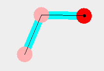

Fuzzy Control Demo
This demo simulates a 2 link robot arm.

Control
The user (that is you) can click on the screen to specify the desired location of the "hand".
The controller works out the angles needed to achieve this "target" position and uses the
difference between the actual values and the target as inputs to the fuzzy control system.
The angular velocities are also used in the fuzzy control system to provide damping.
The inputs are:
- phi1 and phi2 --
the difference between the actual angle
and the requested angle
-
dphi1dt and dphi2dt-- rate of change of the angles.
The ouput of the system is the torques for the joints torque1 and torque2
The rule set for this demo was created in a hurry
by the author in order to get the demo working.
The rules can be edited
(and possibly saved but this feature is untested on windows)
using the Fuzzy Control Logic tab.
If you manage to create a better system please let me have
a copy :-)
PJ.Leonard